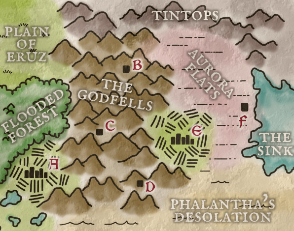

Bottom-Up Generation - Part 3: Settlements
This is a procedure for generating settlements for a fantasy setting. These are the base components of out fantasy world, the geographhy of which we outlined in the previous post. To use this, roll on the tables below, noting your results, then write a small paragraph tying the results together.
People
FOLK (d6)
- 1-5: Humans
- 6: roll another (d6)
- Elder folk – Elves or Orcs or …
- Sky Folk – Giant Owls or Drakedaughters or …
- Deep Folk – Dwarves or Fishmen or …
- Wee Folk – Hobbits or Goblins or …
- Big Folk – Cyclopses or Trolls or …
- Cursed Folk – Shades or Gnolls or …
POPULATION (d6)
If the region is already established to be a city, it is one with 10,000s of people, otherwise, roll:
- 1-3. Village 100s of people
- 4-6. Town 1000s of people
ELITES (d8)
- Nobles
- Priests
- Soldiers
- Merchants
- Criminals
- Mages
- Scholars
- Bureaucrats
RULER (d6)
- 1-3. Single Monarch
- 4-5. Two to Six approximate equals
- 6: Many small rulers
RULERSHIP (d6)
- by Birthright
- by Election
- by Force
- by Popularity
- by Test
- by Expedience
Places
LANDMARK (d6) Roll up two landmarks
- 1-2: Outpost
- 3-4: Ruin
- 5-6: Natural Feature
Roll on the indicated subtable:
OUTPOST (d6)
- Monastery or Shrine
- Castle or Tower
- Mine or Camp
- College or Observatory
- Trading Post or Inn
- Manor or Glebe
RUIN (d6)
- Temple or Monument
- Mine or Laboratory
- City or Tower
- Fortress or Prison
- Library or Tomb
- Manor or Palace
RUIN AGE (d6)
- 1-2 Within memory
- 3-4 Within the current historical period
- 5-6 In ancient times
NATURAL FEATURE (d6)
- Air (breathable air, wind, sky, cyclone, etc)
- Earth (Cave, Formation(s), seismic, canyon, etc)
- Fire (volcano, natural vents, lava, open flame, etc)
- Water (geyser, spring, whirlpool, waterfall, etc)
- Life (Tree, Flowers, Beast, Fungi, etc)
- Roll twice and combine
Tags
TAG (d6d6) Roll two tags.
-
- Treasure Hoard
- Great Barrier
- Shapeshifters
- The Cycle
- World-Crux
- Overgrown
-
- Godhead
- Skybound
- Secret Cult
- Impending Doom
- Cursed Populace
- Bathhouse
-
- Gears and Metal
- Undeath
- Exacting Tradition
- Dangerous Terrain
- Ancient Seal
- Nomads
-
- Avowed Order
- Battleground
- Plagued
- Carnival
- Unusual Art
- Natural Wonder
-
- Empty Throne
- Planar Rift
- Mirror World
- Subaquatic
- Scrupulous Seclusion
- Megastructure
-
- Dragon
- Mind Over Matter
- Grand Contest
- Terror in the Night
- Leviathan
- Great Work
DETAIL (d12d6) Roll two details.
-
- Scales
- Twin
- Teeth
- Compass
- Rune
- Angel
-
- Shadow
- Bridge
- Soul
- Waste
- Spark
- Ring
-
- Wave
- Orb
- Rat
- Filth
- Colors
- Rain
-
- Reflect
- Horn
- Witch
- Sun
- Ice
- Spear
-
- Gold
- Ink
- Helm
- Lantern
- Coin
- Earth
-
- Chain
- Ooze
- Blood
- Bone
- Mask
- Lady
-
- Cloak
- Chaos
- Stone
- Silk
- Steed
- Deep
-
- Vision
- Silence
- Tree
- Spiral
- Feather
- Eye
-
- Demon
- Wind
- Daggers
- Seed
- Iron
- Trickster
-
- Rice
- Gloom
- Hunger
- Blast
- Gem
- Color
-
- Mist
- Ethereal
- Wheels
- Forge
- Judge
- Fairy
-
- Spire
- Titan
- Cinder
- Jester
- Glass
- Worm
As an example, I’ll step through the process of creating settlements for the North-East corner of the previously created map:

What I know about the terrain of the map so far: The Godfells Are holy mountains where gods that have died are interred. Aurora Flats glow with unnatural violet whisps and auroras at night.
I’ll start with the two cities, since they are most likely to shape what this section of the realm will be like.
A: Gergamon
A City of Cyclopses. Elites: Mages. Rulership: Single monarch by birthright. Landmark: Natural feature with the Life aspect. Tags: Ancient Seal / Cursed Populace. Details: Iron / Silence.
Home to the Cyclopses: huge, one-eyed beings once known for their roaring magical incantations. In ancient times, the cyclopes mages stole a Seed of Life from the Garden of the Gods. In retribution for this, the goddess Iexis cursed the Cyclopes with muteness for as long as the cyclopses’ stolen tree lived. Unable to die or speak, the cyclopes mages now seek the magical power of Cold Iron needed to destroy the tree of life that towers over their city.
E: Sembercrux
A City of Humans. Elites: Nobles. Rulership: Single monarch by birthright. Landmark: ruin of a temple or monument ruined in ancient times. Tags: Battleground / The Cycle. Details: Forge / Scales
Capital of the Realm and a city of fire and industry. This city has been razed to to ground at least 6 times in the past, only surviving by threads of fate. After the Royal Seer, upon Old Temple Hill, fortold the death of the city by fire and lightning, leadership of this place has become paranoid and distrusting of the Cyclopses over the mountains, believing that they covet the stockpile of Cold Iron deep in the city vaults, and wish to see the city destroyed a seventh time. The city labors to produce the “ultimate weapon” - a flying war machine with the shape and powers of a dragon.
B: Jubilux
A Town of Humans. Elites: Nobles. Rulership: single monarch by election. Landmark: Natural Feature with the water aspect. Tags: Grand Contest / Carnival. Details: Tree / Wheels
Built into the skull of the dead god of Merry-Making, the Circus here memorializes the fabled Last Joke with inummerable pranks, pratfalls, high-flying stunts, rigged games, and dramatic performances. A jester or bard cannot truely be said to have “earned their polka-dots” without a visit. Recently, a new promotion from the King of Clowns themself has drawn crowds from accross the realm: BECOME A GOD! LORD JUBILUX REINCARNATED! DO YOU HAVE WHAT IT TAKES?? ONE WEEK ONLY!
C: Haletto Pass
A Village of Humans. Elites: Merchants. Rulership: several equals by popularity. Landmark: Ruin or library or tomb – within current historical period. Tags: World-Crux / Plagued. Details: Chain / Coin
A small village built next to the great Chain that Bolts the Heaven to the Earth. Eons ago, with the assistance of the rebelling Titans, the mortals chained the god’s world to the mundane universe. The Guild of Otherworldly Consignment secretly regulates the flow of goods and services from one world to the next. Recently, they’ve been tracking a mysterious plague carried by brass coins recently dug up here.
D: Cadreen
A Village of Shades. Elites: Priests. Rulership: Several Approximate Equals by Force. Landmark: Ruin of City or Tower ruined within current historical period. Tags: Exacting Tradition / Mirror World. Details: Orb / Stone
The ruined city of Cadreen is filled with haunted statues. The city is home also to the wizard Naphide, Master of the Mirrors. The statues guard his soul-orb as he delves deeper and deeper into the mirrors, anchoring his ever-dissipating soul to the material world. Naphide has seen wonders in the mirrors, and (if he even can be found in his maze of reflected realities) loves to bargain with knowledge. The statues are even older than him, but serve him willingly, as he has promised to find them a way back to the land of the dead though the mirrors.
F: Gemara
A Town of Cyclopes. Elites: Soldiers. Rulership: Single Monarch by expedience. Natural Feature of the Water aspect. Tags: Planar Rift / Impending Doom. Details: Worm / Bridge
Built into an island in the middle of The Sink, a large saltwater lake. The Cyclopes here left the city of Gergamon seeking a simpler life away from the frantic magical research of the city. The people of this town surivive by hunting the titanic Purple Worms that squirm at the bottom of the lake, the slime of which has a number of properties, including as a electro-conductive lubricant used by the industrialists of Sembercrux - it has the property of attracting and consentrating the natural magical radiation of Aurora Flats. An army of the Sembercuxi are massing at the bridge. The Sembercrux Warband leader privately worried - how does one besiege a town filled with immortals…?